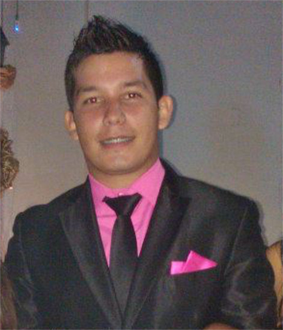

<section class="yo">
	<div class="container">
		<div class="row">
			<div class="col-md-4">
				
			</div>
			<div class="col-md-8 text-justify">
				<p>
				Soy <b>Félix Blanco</b>, Venezolano nacido en Maturín Estado Monagas, Amo todo lo que tienen que ver con la tecnología, Estudie informática para la gestio social en la UBV-Monagas y tengo habilidades en programación en PHP, Python, Extjs, JavaScript y Jquery. Diseño Web en tecnologias como Css3, HTML5, Manipulación en SEO y desarrollo de aplicaciones web, así mismo como manipulación en Wordpress y trabajo con Git/GiHub, Base datos como Mysql y PostgreSql, he manipulado Marketing en redes sociales con el objetivo de que conozcan mas personas tu sitio web. 
				</p>
				<h2>He desarrollado proyectos donde colaboro directamente:</h2>
				<h3>Canamelar.com <small><a href="">Ver Sitio</a></small></h3>
				<p>
					Proyecto donde nuestro objetivo es dar a mostrar la Cultura del Baile y Folklor Venezolano asi llamado: Baile del Mono 28 Caicara de Maturin - Venezuela.<br>
				</p>
				<h3>emjgnr.com.ve <small><a href="">Ver Sitio</a></small></h3>
				<p>
					Proyecto para la Escuela de Música Josè Gabriel Nuñez Romberg, Ubicada en Maturìn del estado Monagas, es una aplicación donde controla la gestión administrativa, este proyecto a ayudado a que las personas tengan ese acceso por medio de Internet de no asistir presencialmente a las inscripciones y puedan hacer sus inscripciones desde Internet todas sus funciones principales como ver como va un estudiante. <br><br>	
					Puedes visitar mi portafolio y descubrir mas sobre los proyectos que he realizado.
					<br>
					Si quieres crear un proyecto puedes enviarme a felixempres@gmail.com tu idea y hablemos del proyecto. 								
				</p>
			</div>
		</div>
	</div>
</section>